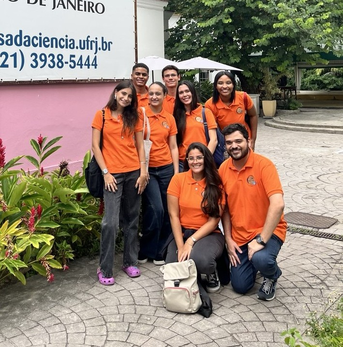
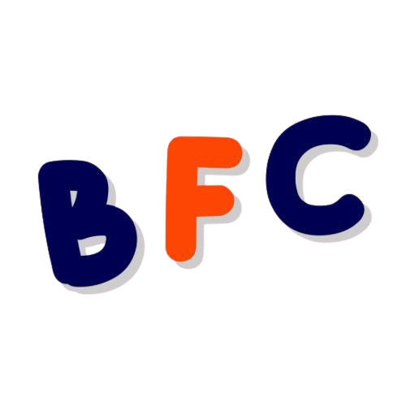
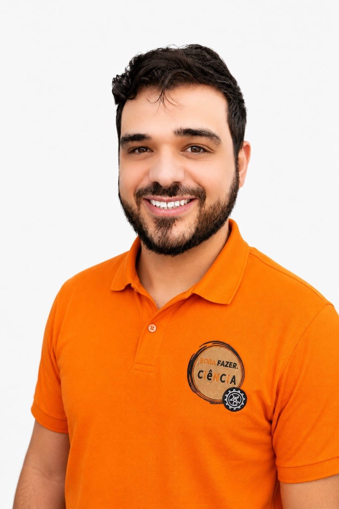
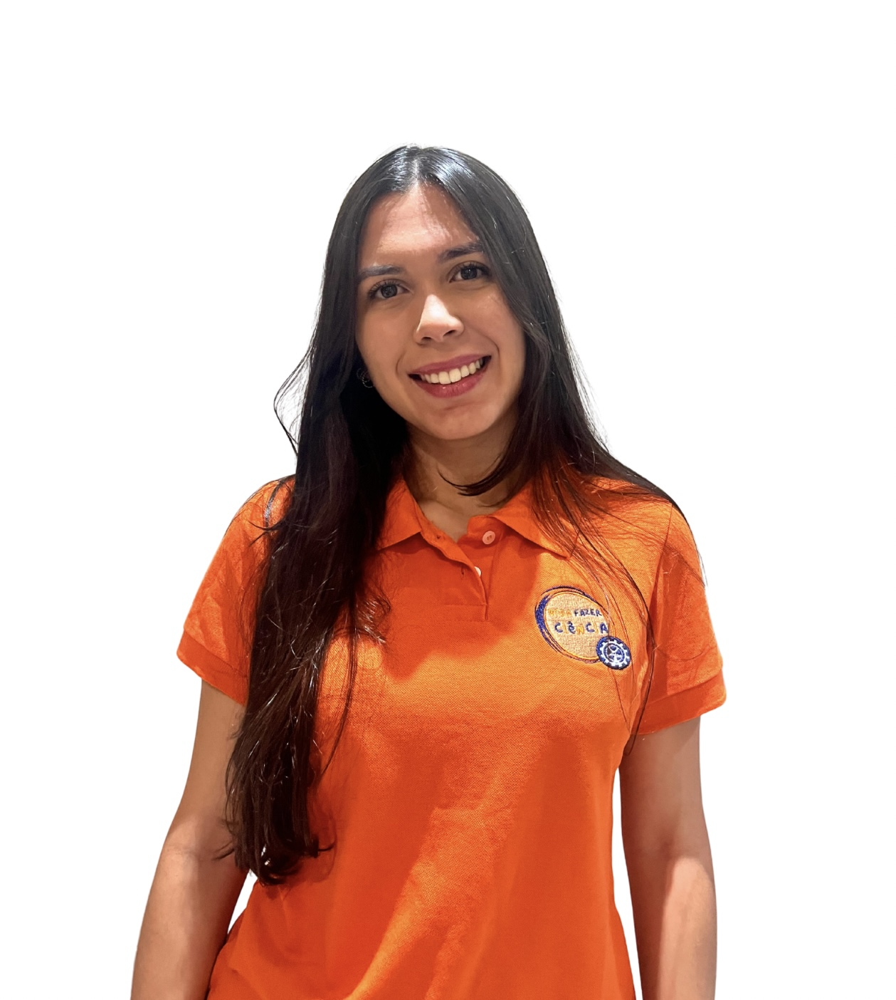
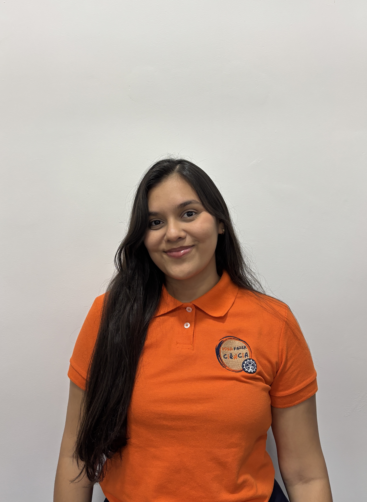
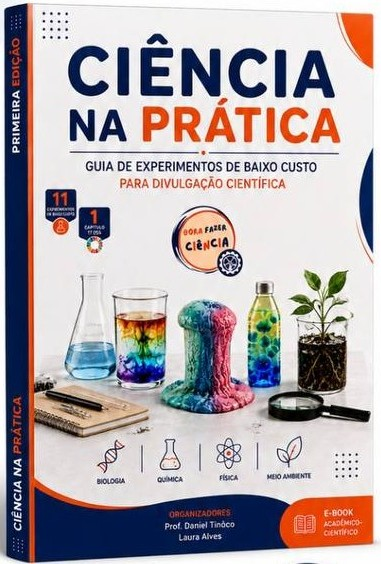

Escola de Química — UFRJ
Bora Fazer Ciência
Um projeto de extensão universitária dedicado à divulgação, promoção e defesa da ciência brasileira.
Um projeto de extensão universitária dedicado à divulgação, promoção e defesa da ciência brasileira.


Criado em 2019 por um grupo de pós-graduandos da COPPE a partir das reflexões geradas do Colóquio de Engenharia Química sobre Ciência e Sociedade, o BFC iniciou suas atividades como um projeto autônomo de extensão voltado para a divulgação, promoção, popularização e defesa da ciência brasileira, especialmente desenvolvida na UFRJ.
Em 2025, o BFC passou a integrar as ações de extensão da Escola de Química, sob coordenação do Prof. Dr. Daniel Tinôco, sendo rebatizado como Bora Fazer Ciência EQ UFRJ. O BFC - EQ/UFRJ é formado por alunos de graduação e pós-graduação que veem na extensão o caminho para retornar à sociedade todo o investimento público realizado em sua formação durante os anos vividos na UFRJ.
Conheça os coordenadores do BFC!



Conheça os membros e pesquisadores que fazem cada frente do BFC acontecer!
Pesquisadores responsáveis pela orientação acadêmica, rigor científico e inovação nas pesquisas e ações do projeto.
Frente responsável pela elaboração, aplicação prática e desenvolvimento dos experimentos, cartilhas e oficinas.
Responsável pela gestão de mídias sociais, criação de conteúdo audiovisual e popularização da ciência na internet.
Frente voltada para parcerias institucionais, articulação com escolas públicas, relacionamento com a comunidade e gestão interna dos membros.
Com o objetivo de aproximar a academia e a sociedade, o Bora Fazer Ciência (BFC) tem atuado em frentes estratégicas de trabalho:
Oferta de palestras, minicursos e workshops para escolas públicas e demais institutos de ensino (remota e presencial).
Desenvolvimento de experimentos científicos de baixo custo, de áreas diversas, alinhados ao interesse e realidade socioeconômica do público.
Aplicação do saber científico na solução de problemas comunitários reais, como o projeto de composteiras de baixo custo e capacitação em processos fermentativos para geração de renda.
Comunicação científica nas redes sociais (Instagram, YouTube e TikTok), por meio de posts, vídeos informativos, divulgação de materiais e podcasts.
Evento na Escola de Química/UFRJ, nas versões calouros e kids, com o objetivo de apresentar o espaço universitário ao público.
Evento realizado em parceria com a Casa da Ciência da UFRJ, em que propomos oficinas de tema ambiental para crianças de 4-12 anos e atividades temáticas de "Pokémon científico" para famílias.
Evento para público externo, com atividades interativas, jogos e experimentos diversos.
Participação na Tenda Engenhosa e no EQ POP, atendendo alunos de nível médio, realizando experimentos e jogos.
Evento para os alunos com altas habilidades do Instituto Sabendo Mais em parceria com as iniciativas Alimentec, For_Code e EDS Maker.

Este guia prático foi cuidadosamente elaborado para democratizar o ensino da ciência de forma acessível, segura e estimulante. O livro apresenta experimentos interativos desenvolvidos com materiais do cotidiano — perfeitos para serem realizados em sala de aula ou em casa:
Produzimos relatórios científicos das atividades que propomos.
Produzimos Cartilhas Científicas voltadas para a popularização e exposição da realização de experimentos de maneira acessível.
Para consolidar o exposto nos Roteiros e Cartilhas, produzimos materiais interativos e didáticos sobre as atividades e conceitos científicos.